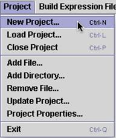

New Project (Control N)
This begins a new project. A project is a way of organizing all related MAGIC Tool work in a folder. The name you give to the project is the name of the folder, and the folder is automatically created by MAGIC Tool. Each project name should be unique and descriptive. Within the folder created by MAGIC Tool will be a file that ends with the suffix ".gprj". All subsequent steps and files will be stored automatically in this project folder, until you start another new project. The .gprj file is a text file that is essentially a table of contents of your project.